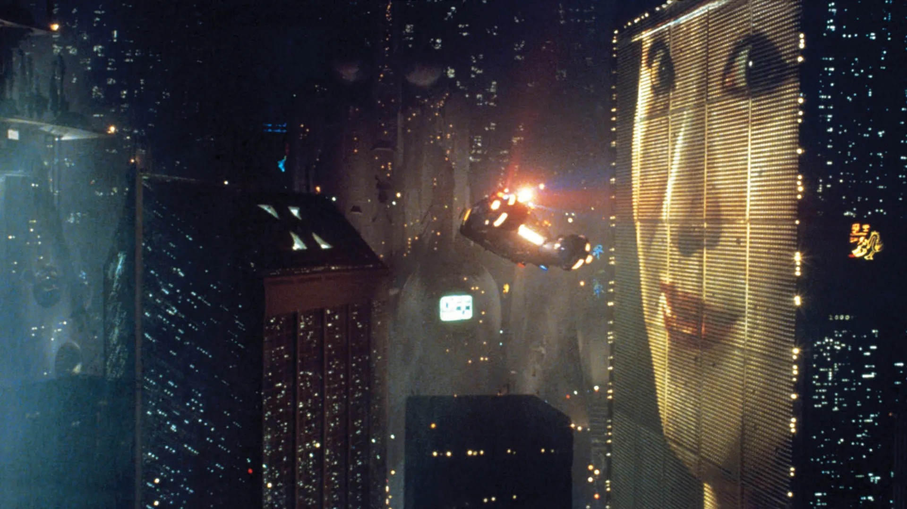
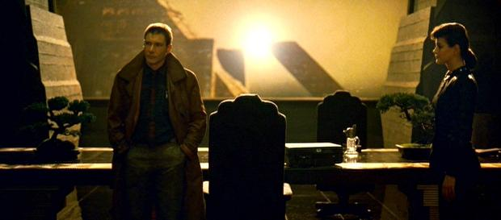
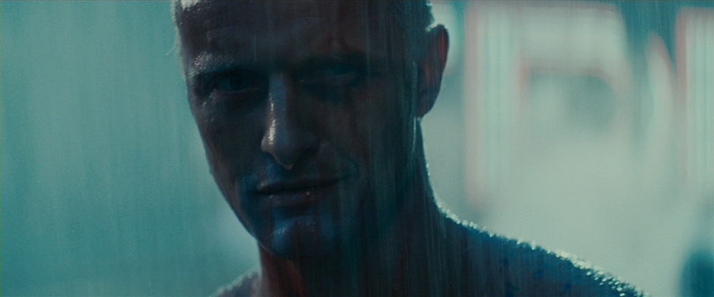
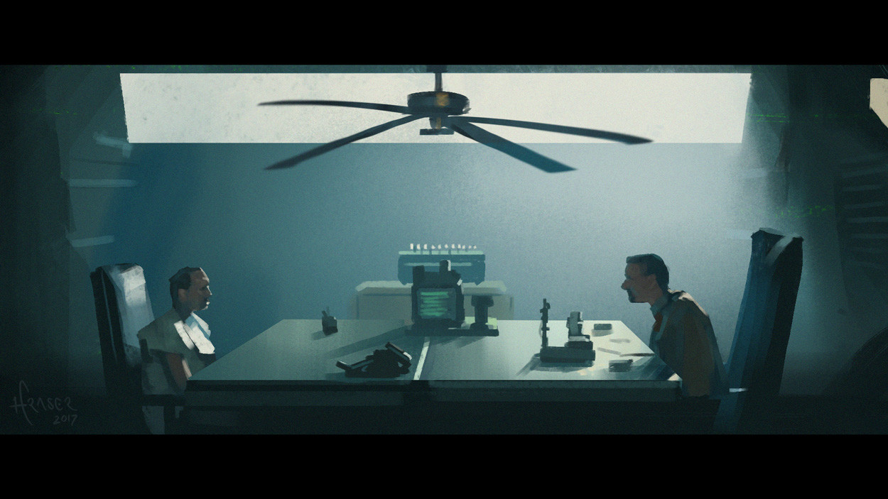

Um marco da ficção científica adaptado para o cinema e estrelado por Harrison Ford — o rosto definitivo dos grandes sucessos das décadas de 70 e 80. A trama nos transporta para uma Los Angeles futurista no ano de 2019, sob o olhar do detetive Rick Deckard. É curioso notar como a tecnologia ali apresentada reflete exatamente o que as pessoas dos anos 80 apostavam que teríamos no futuro; contudo, aqui estamos em 2026, e a realidade ainda é bem diferente daquelas previsões.

Como eu já havia lido o livro que serviu de base para o longa, a premissa não foi uma novidade, mas o conceito futurista ainda impressiona. Para a época, o filme entrega efeitos práticos belíssimos e cenários quase sempre depressivos e chuvosos. Fica a dúvida: seria essa estética uma forma filosófica de traduzir a melancolia de um futuro incerto? Por já conhecer a história, minha expectativa era alta e, embora tenha sido alcançada, não foi de forma perfeita. Apesar de a essência da obra original estar presente, a narrativa cinematográfica me pareceu muito mais monótona que a do livro — talvez porque a liberdade da imaginação durante a leitura dite um ritmo mais dinâmico.



"Enquanto a imaginação no livro é livre e veloz, o cinema escolhe a contemplação. O longa não apenas conta a história, ele nos obriga a caminhar lentamente por sua melancolia, mesmo que o ritmo cobre seu preço."
Em suma, é uma excelente história. No entanto, para mim, o tom contemplativo e a lentidão em diversas passagens tornaram a experiência um tanto arrastada. É possível que o peso de ser um clássico absoluto do gênero, somado à minha pré-expectativa, tenha interferido na percepção final da obra.
✔ O QUE É BOM
- Visual Impecável
- Fidelidade Temática
- Atmosfera Marcante
✖ O QUE NÃO É BOM
- Ritmo Lento
- Sensação de Prolongamento
- Expectativa vs. Realidade
Discussão e Opiniões